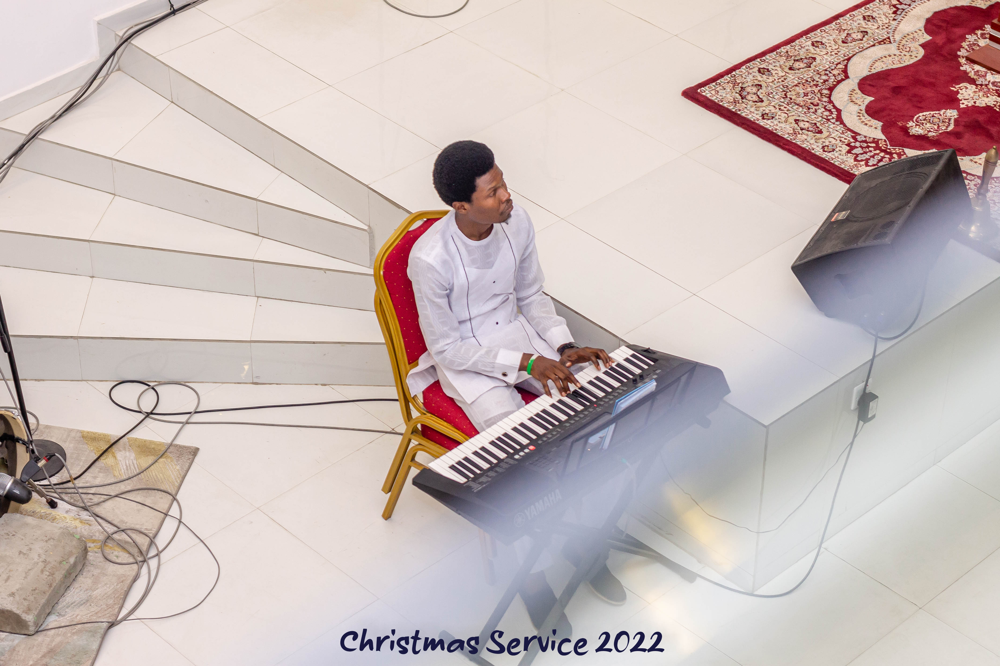

Vacation Gist + Family Dates + Games + Trades = more trips and better experience.
Discover how unified data and trusted AI help you connect with customers in a whole new way.
Discover how unified data and trusted AI help you connect with customers in a whole new way.